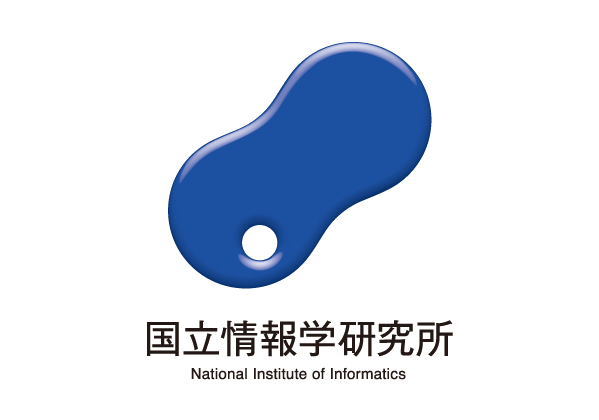

Speech & Omni Models
Speech, vision, video and audio intelligence across understanding and generation.
I am currently a Staff Researcher/Tech Lead at Alibaba Group (ATH), where I lead the Speech and Omni LLM Applied Research team. Previously, I was a researcher at the Mohamed bin Zayed University of Artificial Intelligence (MBZUAI), focusing on multilingual and multimodal large language models. I earned my Ph.D. in Machine Learning from Dublin City University's ML-Labs in 2023, following a Bachelor of Engineering from Northeastern University in China in 2018.
My research focuses on natural language processing, particularly LLMs for multilingual, multimodal, and speech applications, as well as LLM agents. Representative projects include Marco-MoE, Trust No Tool, Crayotter, and CoQuIR, which was selected for an ACL 2026 SAC Highlights Award. This body of work also includes papers accepted at COLM 2026, CVPR 2026, and ICASSP 2026.
My work has also received recognition beyond these projects: GPT4Video was nominated for the Best Paper Award at ACM-MM 2024, my open-source projects and contributions have collectively earned 4k+ GitHub stars, and I won two championships and two runner-up prizes at the IWSLT 2025 speech translation competition. Before joining Alibaba Group, I held research and visiting positions at Tencent AI Lab, the National Institute of Informatics (NII), and IBM Research-China.
I have received several personal honors, including the German DAAD AInet Fellowship, the 2023 Young AI Role Model of the Year award at the Irish AI Awards, and an SFI PhD Scholarship. My research has also been covered by RTÉ, Slator, and Irish Tech News, including a podcast interview on LLMs.
Speech, vision, video and audio intelligence across understanding and generation.
Traceable multi-agent workflows, tool-feedback defense and robust evaluation.
Efficient model adaptation and culturally grounded intelligence across languages.
Dublin City University · ML-Labs
Alibaba Group · ATH · Speech and Omni LLM Applied Research
Mohamed bin Zayed University of Artificial Intelligence · Multilingual and Multimodal LLMs


🎬 Crayotter, a major initiative on long-horizon video-editing agents, now brings together an open-source project and two papers, with nearly 200 GitHub stars. Two articles featured our work: 从“一句成片”到“长轨推演”：探究多模态智能体在长视频编辑中的应用 and Crayotter：用群体相对偏好反向传播，训练长视频编辑智能体.
🏆 CoQuIR was selected for an ACL 2026 SAC Highlights Award.
🎉 Marco-MoE was accepted to COLM 2026 and featured by 24 AI.
🎉 Spurious Rewards Paradox was accepted to ICML 2026.
🎉 ElasticFormer was accepted to CVPR 2026.
🎉 Marco-Voice, LongSpeech and MECap-R1 were accepted to ICASSP 2026.
🎤 Invited industry expert talk on Marco Models at ACM Multimedia Asia 2025.
📰 Marco-Voice was featured by Slator for its unified approach to voice cloning and emotional speech synthesis.
🏆 Our team secured two championships and two runner-up prizes at IWSLT 2025.
🎉 Four papers on multilingual LLMs and hallucination detection were accepted to ACL 2025.
🎙️ CVQA was featured in a Microsoft Research podcast on culturally aware and linguistically diverse multimodal evaluation.
* denotes corresponding or equal contribution. See Google Scholar and DBLP for the complete record.
arXiv preprint, 2026.
Proceedings of the 64th Annual Meeting of the Association for Computational Linguistics.
Conference on Language Modeling.
IEEE/CVF Conference on Computer Vision and Pattern Recognition.
IEEE International Conference on Acoustics, Speech, and Signal Processing.
IEEE International Conference on Acoustics, Speech, and Signal Processing.
Proceedings of the 32nd ACM International Conference on Multimedia.
NeurIPS Datasets and Benchmarks Track.